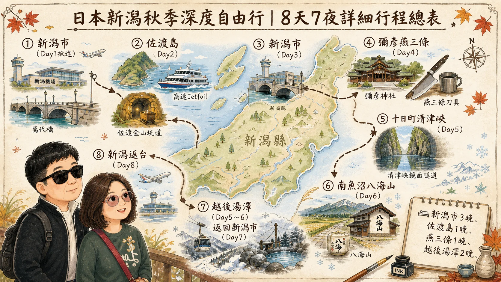
點圖放大 ↗旅程總覽
八天七夜行程總覽
Day 1 抵達 → Day 2～3 佐渡 → Day 4 信仰與職人 → Day 5 藝術與峽谷 → Day 6 米與酒 → Day 7 雪國慢旅行 → Day 8 採買返台。
EIGHT DAYS · SEVEN NIGHTS
一張行程圖搭配一段原始行程說明，依序瀏覽八天旅程與住宿、飲食安排。
資料來源｜A01-行程預算資料／A02-行程內容.md圖片與對應文字緊接排列；點選圖片可放大瀏覽並切換前後圖表。

點圖放大 ↗Day 1 抵達 → Day 2～3 佐渡 → Day 4 信仰與職人 → Day 5 藝術與峽谷 → Day 6 米與酒 → Day 7 雪國慢旅行 → Day 8 採買返台。
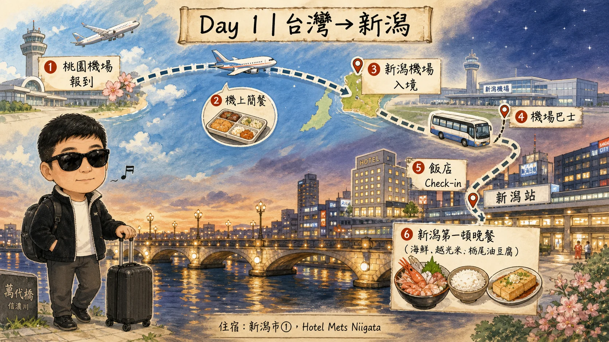
點圖放大 ↗上午；台灣準備出發，前往桃園國際機場；交通：自行前往桃園機場；餐食：早餐／早午餐自行安排；備註：行李建議含20kg以上托運。 11:00～13:00；桃園機場報到、托運、出境；餐食：機場簡餐。 13:45～18:00；桃園 → 新潟；交通：✈️ 台灣虎航 IT228；餐食：機上簡餐；備註：航班依實際日期再次確認。
18:00～19:00；入境日本、領取行李；交通：步行。 19:00～19:30；新潟機場 → 新潟站；交通：🚌 機場直達巴士，約25～30分。 19:30～20:00；飯店 Check-in；交通：步行；備註：Hotel Mets Niigata／Hotel Global View Niigata。
20:00～21:30；新潟第一頓晚餐；交通：步行；餐食：Ikanosumi：海鮮、越光米、栃尾油豆腐、地酒；或 Tonkatsu Masachan 醬汁豬排飯；備註：中價位。 21:30後；新潟站周邊散步、休息；交通：步行；備註：🛏️ 新潟市①。
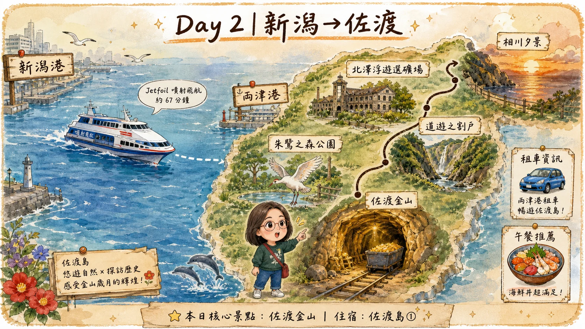
點圖放大 ↗06:00～06:45；起床、早餐、準備出發；餐食：飯店早餐／便利商店；備註：行李盡量精簡。 約06:45；新潟站 → 新潟港；交通：🚌／計程車；備註：建議提早抵港。 約07:55～09:02；新潟港 → 両津港；交通：🚢 Jetfoil，約67分鐘；備註：佐渡汽船。
09:10～09:40；両津港取車；交通：🚗 租車；備註：佐渡建議租車。 10:00～11:30；朱鷺之森公園：認識朱鷺復育、日本自然保育；交通：🚗；備註：自然生態主題。 12:00～13:00；佐渡午餐；交通：🚗；餐食：Chozaburo Sushi：壽司、海鮮丼、當季魚類；備註：約¥1,000～2,500／人。
13:30～15:30；佐渡金山：江戶幕府、金銀開採、礦工生活、採礦技術；交通：🚗；備註：⭐本日核心景點。 15:40～16:40；道遊之割戶及金山周邊；交通：🚗；備註：代表性礦山景觀。 16:50～17:40；北澤浮遊選礦場：近代礦業遺跡；交通：🚗；備註：適合夕陽、手繪分鏡。
17:45～18:30；相川、日本海夕景；交通：🚗；備註：視天候調整。 18:30～20:00；晚餐；交通：🚗；餐食：佐渡弁慶：佐渡海鮮、迴轉壽司；備註：中等價位。 20:00後；飯店／溫泉、休息；交通：🚗；備註：佐渡塔比ノ酒店／Hotel Azuma；🛏️ 佐渡島①。
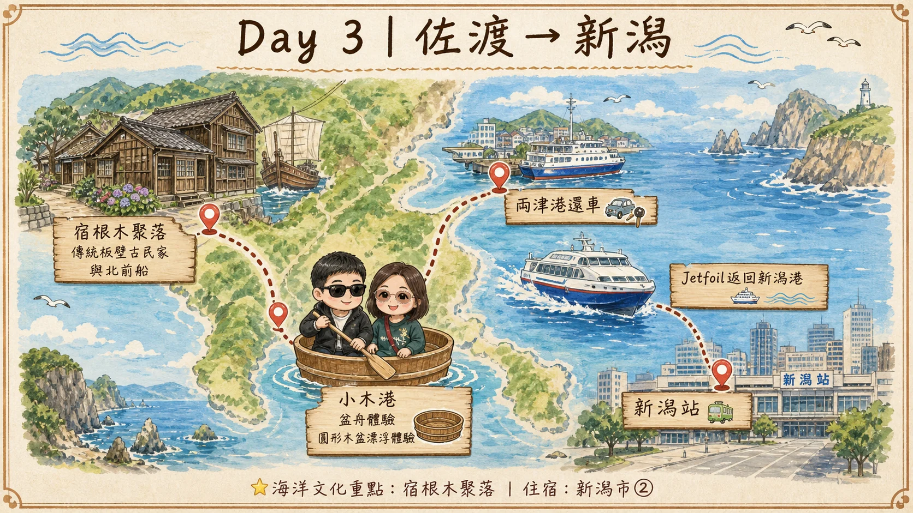
點圖放大 ↗07:00～08:00；早餐、退房；餐食：飯店早餐。 08:00～09:30；往佐渡南部移動；交通：🚗；備註：沿途日本海景觀。 09:30～11:30；宿根木聚落：北前船、船主、船匠、板壁古民家；交通：🚗＋步行；備註：⭐海洋文化重點。
11:30～12:15；聚落慢步、港灣；交通：步行；備註：傳統建造物群。 12:15～13:15；小木／宿根木午餐；交通：🚗；餐食：海鮮定食、蕎麥麵、地方料理；備註：中價位。 13:15～14:00；盆舟 Tarai Bune體驗；交通：🛶；備註：由傳統岩礁漁業工具演變。
下午；小木 → 両津港；交通：🚗；備註：依船班調整。 下午；両津港還車；交通：🚗；備註：預留加油、還車時間。 約14:35或16:55；両津 → 新潟；交通：🚢 Jetfoil；備註：不建議押最後船班。
傍晚；新潟港 → 新潟站；交通：🚌／計程車。 晚上；晚餐、休息；交通：步行；餐食：海鮮／居酒屋／越光米料理；備註：🛏️ 新潟市②；Hotel Mets／Global View。
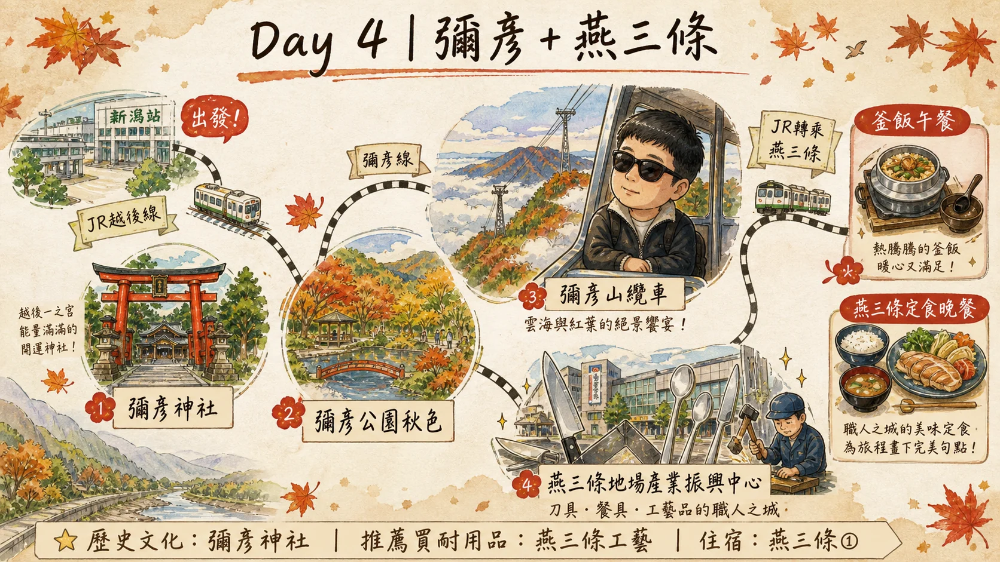
點圖放大 ↗07:30～08:30；早餐、退房；餐食：飯店早餐。 上午；新潟 → 吉田 → 彌彥；交通：🚃 JR越後線＋彌彥線；備註：大行李隨身或寄放。 09:30～11:00；彌彥神社：越後古老信仰、農業與地方文化；交通：步行；備註：⭐歷史文化。
11:00～11:45；彌彥公園秋季散步；交通：步行；備註：10月秋色。 11:45～13:00；午餐；交通：步行；餐食：釜飯／蕎麥麵／地方定食；備註：約¥1,500～2,500／人。 13:00～14:30；彌彥山纜車＋展望；交通：🚡；備註：俯瞰越後平野、日本海。
14:30～15:30；彌彥 → 燕三條；交通：🚃 JR。 15:30～17:30；燕三條地場產業振興中心；交通：步行／計程車；備註：刀具、餐具、金屬加工。 傍晚；工藝品購物／視日期安排職人體驗；備註：⭐推薦買耐用品。
18:30～20:00；晚餐；交通：步行；餐食：燕三條定食／居酒屋；備註：中價位。 20:00後；入住；備註：🛏️ 燕三條①；車站周邊中價位商務飯店。
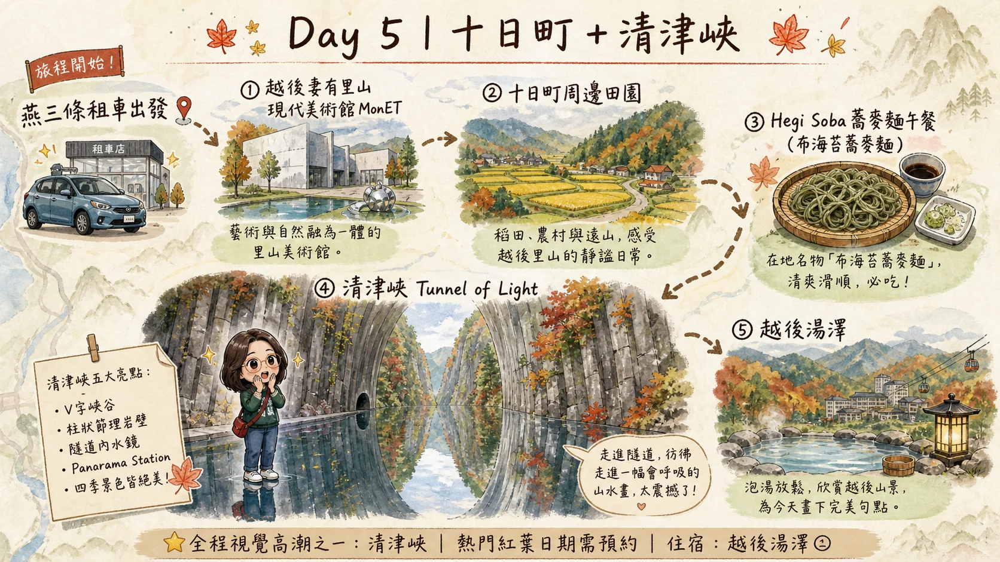
點圖放大 ↗07:00～08:00；早餐、退房；餐食：早餐；備註：今天建議租車。 08:00～09:30；燕三條／長岡 → 十日町；交通：🚗 租車；備註：⭐自駕日。 09:30～11:30；越後妻有里山現代美術館 MonET；交通：🚗＋步行；備註：農村、藝術、地方再生。
11:30～12:30；十日町周邊散步；交通：🚗；備註：視時間增減。 12:30～13:30；午餐；餐食：Hegi Soba：布海苔蕎麥麵；備註：⭐新潟地方料理。 13:30～14:15；十日町 → 清津峽；交通：🚗。
14:15～16:30；清津峽＋Tunnel of Light；交通：步行；備註：⭐全程視覺高潮之一。 V字峽谷、柱狀節理、隧道藝術、Panorama Station水鏡；備註：熱門紅葉日期需預約。 16:30～17:30；清津峽 → 越後湯澤；交通：🚗；備註：秋季山路留意天候。
17:30～18:30；Check-in、溫泉；備註：越後湯澤站周邊飯店／溫泉旅館。 18:30～20:00；晚餐；交通：步行；餐食：越光米、舞茸天婦羅、烤魚、蕎麥麵；或旅館一泊二食；備註：🛏️ 越後湯澤①。 20:00後；♨️ 溫泉、休息；備註：不再排夜間景點。
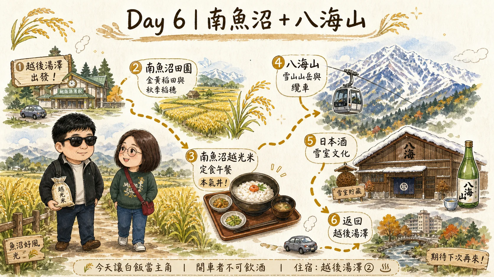
點圖放大 ↗07:30～08:30；早餐；餐食：旅館早餐；備註：不用換飯店。 08:30～09:30；越後湯澤 → 南魚沼；交通：🚗。 09:30～11:00；南魚沼田園：越光米產地、秋季稻田；交通：🚗＋步行；備註：雪、水、田、米的故事。
11:00～12:00；魚沼地方文化／田園景觀；交通：🚗。 12:00～13:30；午餐；交通：🚗；餐食：南魚沼越光米定食／本氣丼；備註：⭐今天讓白飯當主角。 13:30～14:00；前往八海山；交通：🚗。
14:00～16:00；八海山周邊／山岳秋景；交通：🚗／視設施搭纜車；備註：天候不好改酒藏／魚沼之里。 16:00～17:00；日本酒／雪室文化；交通：🚗；餐食：可少量品飲；備註：開車者不可飲酒。 17:00～18:00；返回越後湯澤；交通：🚗。
18:30～20:00；晚餐；交通：步行；餐食：Hegi Soba、舞茸天婦羅、烤魚、越光米；備註：中價位。 20:00後；♨️ 第二晚溫泉；備註：🛏️ 越後湯澤②。
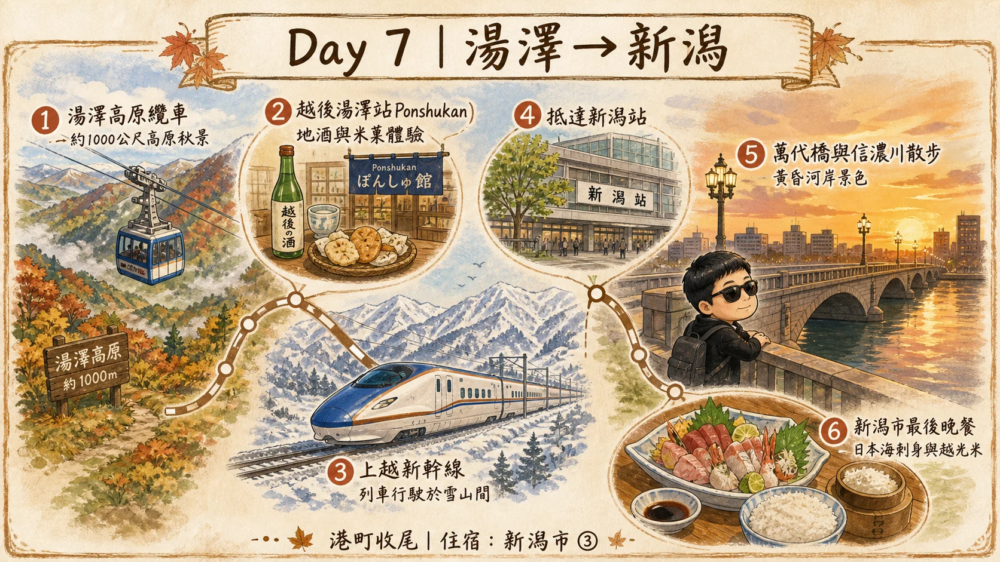
點圖放大 ↗08:00～09:00；早餐、退房／行李寄放；餐食：早餐；備註：今天開始放慢。 上午；還租車；交通：🚗；備註：轉回大眾運輸。 09:30～12:00；湯澤高原；交通：🚡＋步行；餐食：咖啡／甜點；備註：約1,000公尺高原秋景。
12:00～13:30；越後湯澤午餐；交通：步行；餐食：Hegi Soba、舞茸天婦羅、越光米料理。 13:30～15:00；越後湯澤站＋Ponshukan；交通：步行；餐食：日本酒少量體驗；備註：地酒、米、米菓、漬物。 約15:00～16:00；越後湯澤 → 新潟；交通：🚅 上越新幹線；備註：約40～50分鐘。
16:00～17:00；飯店 Check-in；交通：步行；備註：Hotel Mets／Global View。 17:00～18:30；萬代橋＋信濃川散步；交通：步行／市區交通；備註：港町收尾。 18:30～20:30；旅行最後正式晚餐；交通：步行；餐食：日本海刺身、栃尾油豆腐、越光米、新潟地酒；備註：🛏️ 新潟市③。
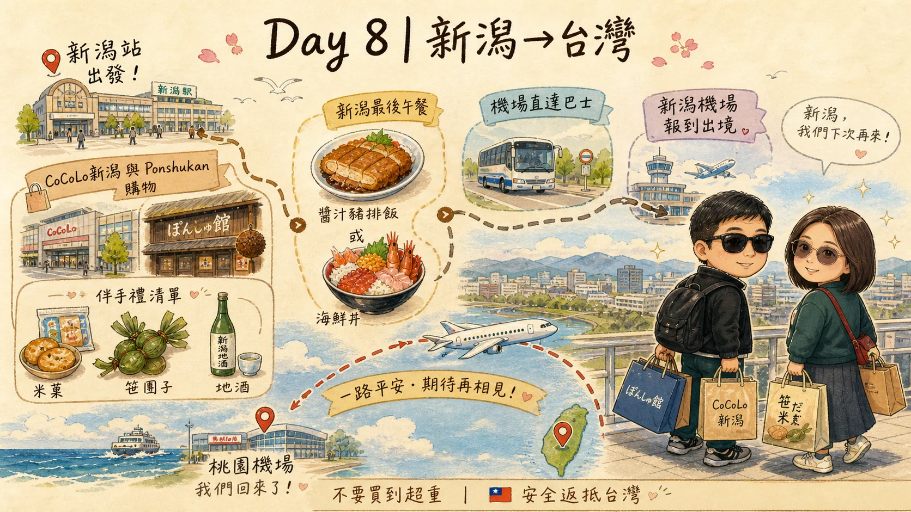
點圖放大 ↗08:00～09:00；早餐、整理行李；餐食：飯店早餐；備註：不用趕。 09:00～10:00；退房、寄放行李。 10:00～12:00；CoCoLo新潟＋Ponshukan；交通：步行；備註：集中購物。
12:00～13:30；新潟最後午餐；交通：步行；餐食：醬汁豬排飯／海鮮丼／蕎麥麵；備註：補吃前面遺漏料理。 13:30～15:00；最後採買、回飯店取行李；交通：步行；備註：不要買到超重。 約15:30～16:00；新潟站 → 新潟機場；交通：🚌 機場直達巴士；備註：預留充足時間。
16:30～18:00；報到、托運、出境；餐食：機場簡餐。 18:50～21:25；新潟 → 桃園；交通：✈️ 台灣虎航 IT229；餐食：機上簡餐；備註：🇹🇼 回台灣。
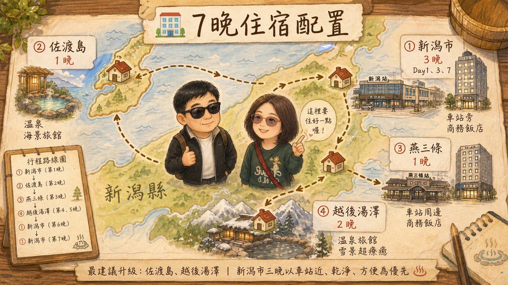
點圖放大 ↗這樣整理之後，住宿移動其實比看起來簡單： 新潟市 3晚＋佐渡島 1晚＋燕三條 1晚＋越後湯澤 2晚＝7晚。 其中我最建議提高住宿品質的是 佐渡島與越後湯澤；新潟市三晚則以「車站近、乾淨、交通方便」為第一優先。尤其 Day 1、Day 3、Day 7 如果都住同一家新潟站飯店，實際旅行會輕鬆很多。
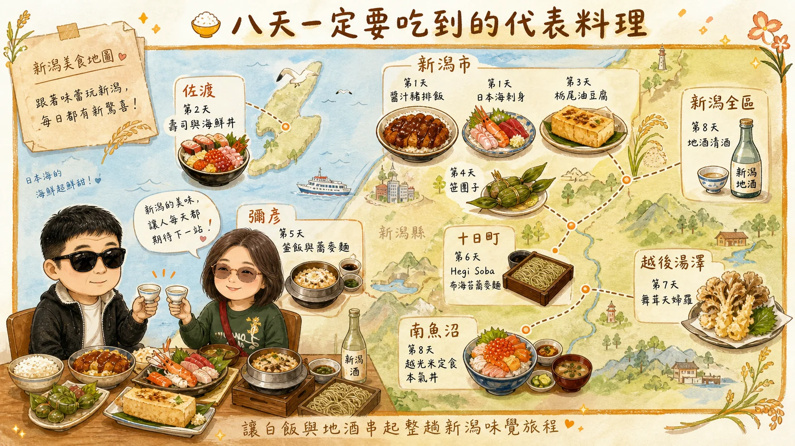
點圖放大 ↗新潟市：醬汁豬排飯：Day 1或Day 8。新潟市：日本海刺身／海鮮：Day 1、Day 7。新潟：栃尾油豆腐：Day 1或Day 7。佐渡：壽司、海鮮丼：Day 2。彌彥：釜飯／蕎麥麵：Day 4。十日町：Hegi Soba：Day 5。南魚沼：越光米定食／本氣丼：Day 6。越後湯澤：舞茸天婦羅：Day 5～7。新潟全區：地酒：Day 1、6、7。新潟：笹團子：Day 8。
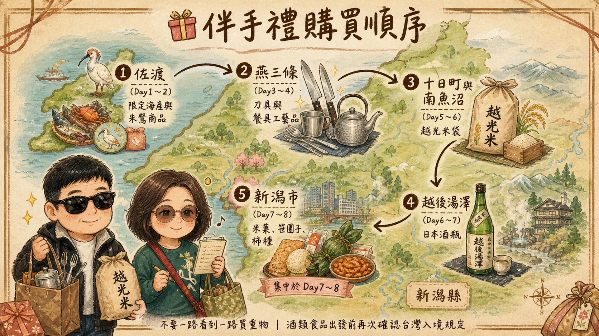
點圖放大 ↗我建議不要一路看到一路買重物。佐渡只買佐渡限定品；燕三條買工藝品；米、日本酒、米菓集中到 Day 7～8。 最值得帶回台灣的是 燕三條金屬工藝品、南魚沼越光米、新潟米菓、笹團子、佐渡限定商品與新潟地酒。酒類與食品則在出發前再次確認台灣入境規定。 ### 整趟8天的節奏 Day 1 抵達 → Day 2～3 佐渡 → Day 4 信仰與職人 → Day 5 藝術與峽谷 → Day 6 米與酒 → Day 7 雪國慢旅行 → Day 8 採買返台。